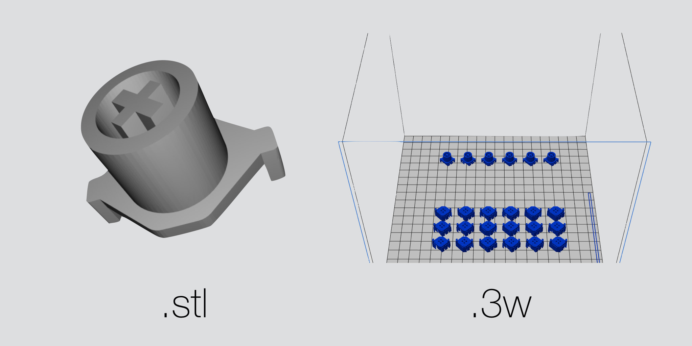

幾個月前我添購一個新鍵盤 - HHKB-BT (Happy Hacking Keyboard Bluetooth Edition) 作為取代 Lab 以及使用 MBA 的時候鍵盤， 新的鍵盤雖然有個滑稽的名字，不過由於其特殊的 60% layout以及輕巧的體型，另外採用 Topre 電容軸，在網路上可是有不小人氣阿～ 原本就有在關注這把鍵盤，一直覺得這麼經典輕巧的鍵盤竟然沒有藍牙的版本，真的非常可惜。不過最近發現五月的時候竟然有了新的 Bluetooth Version 出現， 所以就戳瞎眼買下去的，由於HHKB的通路非常少，在日本甚至沒有在實體店面販售，一定要跟官網買，所以為此我還特別研究一下日本集貨， 不過由於日幣升值，另外沒有跟到活動，所以其實和請別人代購沒有差很多錢，不過可以比較早就值得了～
用了幾個禮拜以後，除了耗電量並沒有如官方說可以用到三個月，其他都還蠻滿意的，隨身攜帶也不會負擔太大。 P.S. 我還特別換了兩顆 2450 mAh 的 FUJITSU 的電池，不過只撐到一個月多，其實已經很足夠了。

講了這麼多，那和3D列印到底又什麼關係勒？ 前面講到 HHKB-BT 採用了特殊的 Topre 軸 ， 所以在鍵帽上面是和 Cherry MX軸不相容的，所以想換鍵帽的話就比需要採用 Topre 相容的鍵帽，不過現在 Cherry MX軸是主流， Topre 鍵帽可以選擇的真的是少的可憐， 不過不要誤會，HHKB-BT 原廠附的鍵帽已是比較高級的 PBT塑膠 並且有作特殊的表面處理，摸起來有如肌膚一般滑順，但是又不會油油的。
若是可以讓 topre 兼容 mx 鍵帽就好了
我再網路上搜尋一下，發現有不少人有跟我一樣的想法 其中我找到一個有意思的解法，就是利用 3D printer 來印出可兼容的 Slider 取代原本 topre 的 Slider 就好了， 這篇網誌的作者 Matt3o 還提供了 3D printer 的模型檔，雖然我從來沒有用過 3D printer，恰好可以趁這次機會來試試。

由於 Matt3o 表示這個 3D printer 要能成功必須要以 "Frosted Ultra Detail" 的精度來印製，這表示印這麼小的零件及有可能會失敗。 另外我也不相信網路上所吹捧 3D printer 有多方便多容易使用，因此為了避免把錢丟到水裡，就想先以最低成本了方式來試試現今的民用的 3D printer 技術可以做到多細。
很幸運的是隔壁友校交大圖書館有提供 3D printer 試用，並且只需要負擔材料費，並請還可以線上預約，真的是十分理想的平台。清大圖書館蓋這麼大，竟然沒有這種設施真的要學學～ 交大圖書館所提供的機器是 da Vinci 1.0 不算是最新，並且採用的3D技術不意外是較平價的 FDM（Fused Deposition Modeling） 白話一點就是把塑膠融化，一層一層把塑膠像牙膏一樣擠上去。由上圖可以看到第一排幾乎完全失敗。這是由於 slider 的模型有懸空的部份，FDM的作法必須要等每一層都凝固才能印下一層，所以懸空的話就會垂下來導致失敗。所以要列印這樣的模型就必須要另外印上支柱，也就是第二排的成品。
我取一個印的最成功的，並且去掉多出來的支柱，可以及形狀已經很接近原本的模型，但是在表面的處理上，是非常差的，可以看到表面凹凸不平，這樣的印刷品質是完全沒辦法用在零件上，可以想像如果真得換到 HHKB-BT 上面，很有可能根本不能滑動。這裡得到的一個結論就是以 FDM 方式來製作這麼小的零件是不可能的，除非我會還要另外手動加工表面，並且成功率非常低（四分之一），這樣完全和3D列印原本的理念背道而馳，我所認為的3D列印就是只需要一鍵完成，還要另外加工真的是 pain in the ass.
我另外在網路上搜尋精度更高的 3D 列印，發現要更好且容易取的列印方法還有SLA光固化，但是要價不匪，找到最低的價格一批至少要下單 1000 元。 順代一提 FDM 試印只花了 4 元。 不過因為完全沒有用過 SLA 直接就下一批，風險真的有點高＠＠
這就是3D列印最終成品，品質細膩，完全不用另外加工，實在太棒了！3D列印真不虧是第三次工業革命！
才怪！！！哈哈
這並不是 3D列印的成品，後來還是覺得用 SLA 風險還是太高，那上圖的 slider 是哪裡來的呢？
早在之前在網路上亂逛關於 topre slider 就有發現其實 CoolerMaster 有推出一款 Topre MX hybrid 的鍵盤， Novatouch TKL 基本上就是 topre 軸加上特製的 slider ，所以網路上有人是直接拆下 Novatouch 的 slider 來用。 不過我原本完全沒有要考慮這樣做，畢竟為了換鍵帽在買一個鍵盤真的太瘋狂了，另外該產品台灣也已經停售了。但是在網路上竟然發現歐洲得 CoolerMaster 官方網站， 竟然有在兜售 slider 的拆裝品。非常幸運的是 CoolerMaster 是台灣公司，所以我就決定賭一睹寫信去 CoolerMaster 詢問有沒有辦法買到多餘的 slider 。
第一次詢問的時候，客服就表示已經和 Topre 合作完了，沒有剩下多餘的 slider ， 我原本就要開始找一家光固化比較合理的商家 沒想到，過了一個禮拜多，客服主動連過告訴我，找到一包 slider 問我要不要？並且價格並不貴，所以我當然就敗下來～
這次 3D列印得經驗告訴我 3D列印 要真的走入家庭，還有很長一段之間要走，要取代正常開模鑄造，還早得很，價格和所能提供得品質， 以目前來說只能印個雕像，小道具等，這種精度要求不高的應用，可以看到上圖，MX鍵帽是完全塞不進 FDM 的列印結果。 不過還是希望這個技術可以更加發展，我想那天可以讓金屬列印真的民用化，那就才真的有看頭。